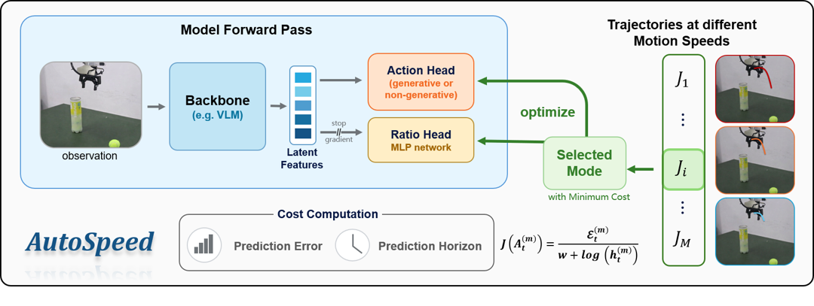
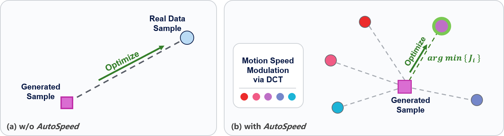
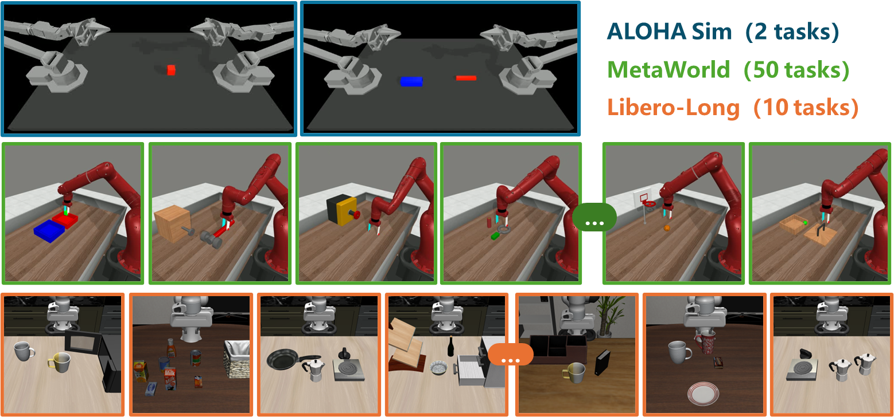
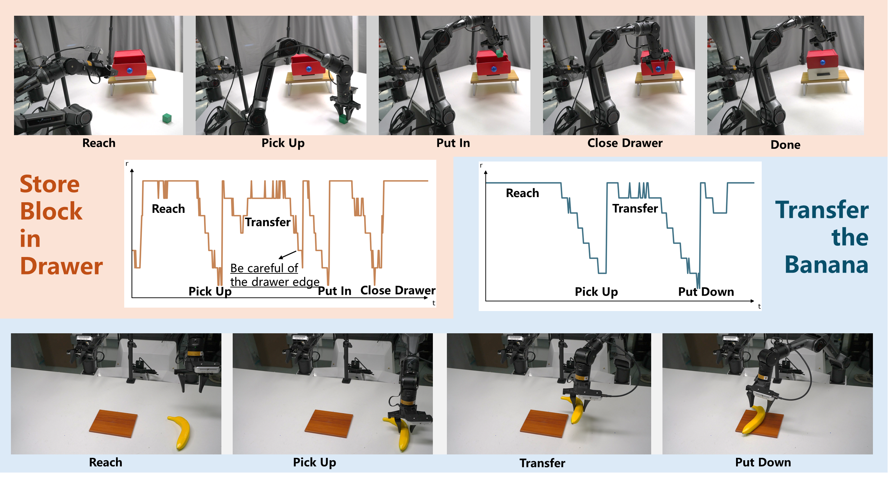
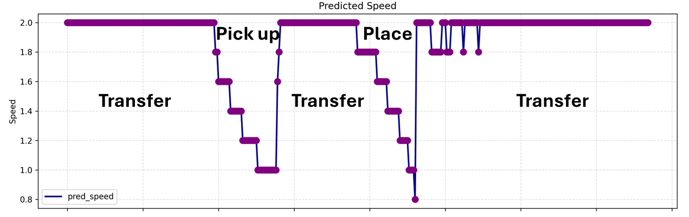
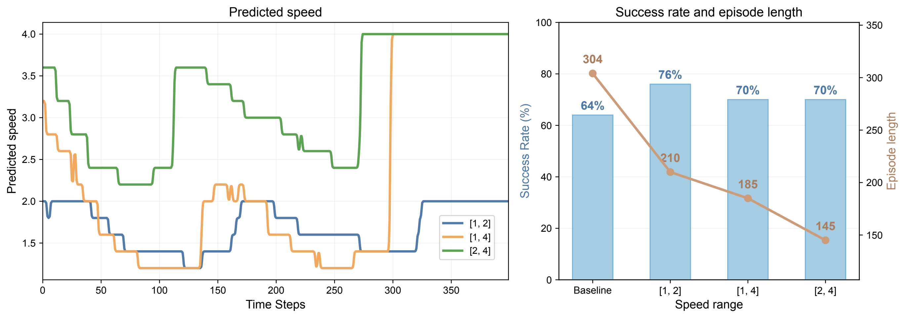
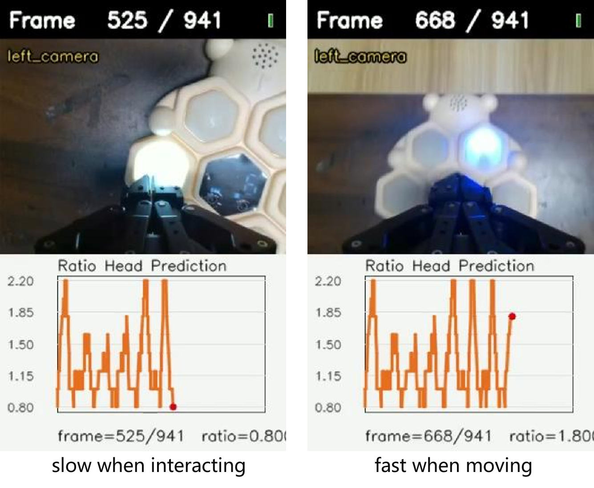

AutoSpeed: Annotation-Free Stage-Adaptive Motion Speed Learning for Robot Manipulation
1Fudan University 2Shanghai Jiao Tong University
Email: tinda24@163.com, zhqiu25@m.fudan.edu.cn
European Conference on Computer Vision, 2026
Abstract
Different stages of manipulation tasks exhibit varying levels of difficulty, suggesting stage-dependent motion speeds and temporal prediction horizons. Existing imitation-learning visuomotor policies usually imitate the execution speed of expert demonstrations and predict over a fixed temporal horizon, which limits flexibility and task throughput. AutoSpeed is a model-agnostic learning framework that enables existing visuomotor policies to predict trajectories with stage-adaptive motion speeds without requiring speed or stage annotations. It treats future trajectories at different speeds as candidate supervision targets, evaluates each candidate with a composite cost that balances prediction error and prediction horizon, and optimizes the policy toward the minimum-cost candidate. DCT-based frequency-domain speed modulation supports smooth non-integer speed scaling while preserving motion continuity. Across simulation and real-world evaluations, AutoSpeed reduces task execution time while improving success rates, and the inferred motion speeds correspond closely to task stages.
Highlights
Method

Candidate Speed Targets
AutoSpeed builds a set of future action chunks at different speed ratios. Each candidate keeps the model output length fixed while changing the effective prediction horizon.
Cost-Aware Selection
A composite cost that trades off prediction error against temporal prediction horizon. The policy is optimized toward the minimum-cost candidate.
DCT Motion Transform
Speed modulation is implemented in the frequency domain with the discrete cosine transform, enabling smooth acceleration and deceleration with non-integer ratios.
Ratio Head and NTA
A lightweight ratio head predicts the speed ratio from observation, and Nonlinear Temporal Aggregation outputs actions by combining the speed for smooth deployment.
Optimization View

AutoSpeed formulates training as cost-aware Multi-Target Selective Optimization. Candidate future trajectories are generated by retiming the same action chunk with different speed ratios. The model then optimizes toward the candidate with the minimum composite cost, allowing speed preference to emerge from ordinary demonstration data.
Intuitively, in easier stages, future actions remain predictable over longer horizons, permitting higher speed ratios; in precision-critical stages, long-horizon prediction becomes less predictable, yielding lower speed ratios.
Simulation Benchmarks
AutoSpeed is evaluated on 62 simulation tasks from ALOHA Simulation, LIBERO-10, and Meta-World. The experiments cover both single-task and multi-task learning, including non-generative ACT and generative BAKU action heads.

Table. Quantitative results across multiple tasks on the ALOHA benchmark. † denotes evaluated with a high-gain controller.
| Method | Transfer Cube | Insertion | ||
|---|---|---|---|---|
| SR (↑) | Len (↓) | SR (↑) | Len (↓) | |
| ACT | 72% | 272 | 22% | 353 |
| ACT(AutoSpeed) | 64% | 160 | 24% | 300 |
| ACT(AutoSpeed†) | 78% | 165 | 24% | 296 |
Table. Quantitative results on multi-task learning benchmarks. Success rate (SR, ↑) and episode length (Len, ↓).
| Method | LIBERO-10 | Meta-World | ||
|---|---|---|---|---|
| SR (↑) | Len (↓) | SR (↑) | Len (↓) | |
| BAKU-DiT | 50% | 261 | 43% | 87 |
| BAKU-Flow | 47% | 287 | 57% | 82 |
| BAKU-DiT (AutoSpeed) | 49% | 259 | 62% | 70 |
| BAKU-Flow (AutoSpeed) | 52% | 171 | 65% | 71 |
Real-World Results
Real robot experiments are conducted on an Agilex Piper bimanual platform with three RGB cameras and robot proprioceptive state. Across four tabletop tasks, AutoSpeed with Nonlinear Temporal Aggregation improves success rates and reduces completion time.

Table. Real-world evaluation. Success rate (SR, ↑) and execution time in seconds (Time, ↓).
| Method | Transfer the Banana | Place the Toy | ||
|---|---|---|---|---|
| SR (↑) | Time (↓) | SR (↑) | Time (↓) | |
| BAKU-Flow+TA | 77% | 20.80s | 33% | 18.13s |
| BAKU-Flow (AutoSpeed)+NTA | 83% | 11.24s | 43% | 10.13s |
| Method | Stacking Two Cubes | Store Block in Drawer | ||
| SR (↑) | Time (↓) | SR (↑) | Time (↓) | |
| BAKU-Flow+TA | 60% | 50.11s | 77% | 38.67s |
| BAKU-Flow (AutoSpeed)+NTA | 63% | 28.52s | 80% | 23.01s |
Stage-Aware Speed Curves


The learned speed curves show consistent phase-aware patterns. Policies accelerate during easier free-space motion and decelerate around complex interaction stages, even when trained with different predefined speed ranges.
More Results
Whac-A-Mole Real-World Experiment
AutoSpeed trained on the Whac-A-Mole game adaptively predicts higher motion speeds while the robot arm moves between targets and lowers the speed during pressing, improving precision in interactions.

BibTeX
@inproceedings{autospeed2026,
title={AutoSpeed: Annotation-Free Stage-Adaptive Motion Speed Learning for Robot Manipulation},
author={Hu, Qingda and Qiu, Ziheng and Zhao, Jieru and Gan, Zhongxue and Ding, Wenchao},
journal={arXiv preprint arXiv:2607.01051},
year={2026}
}